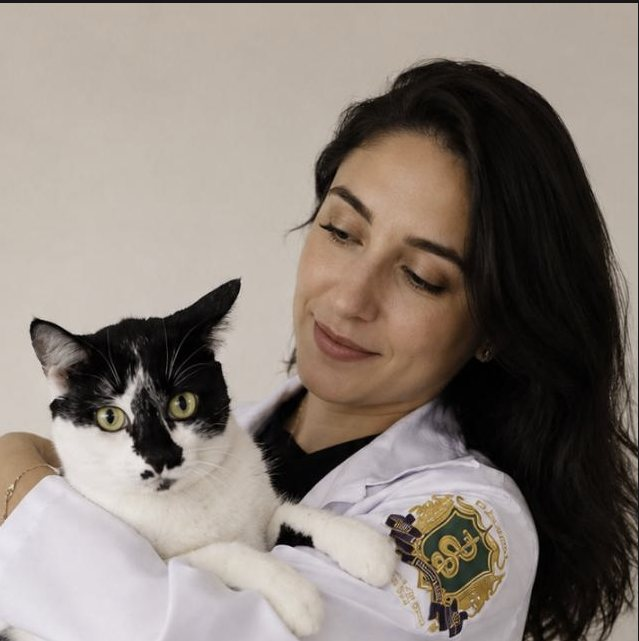
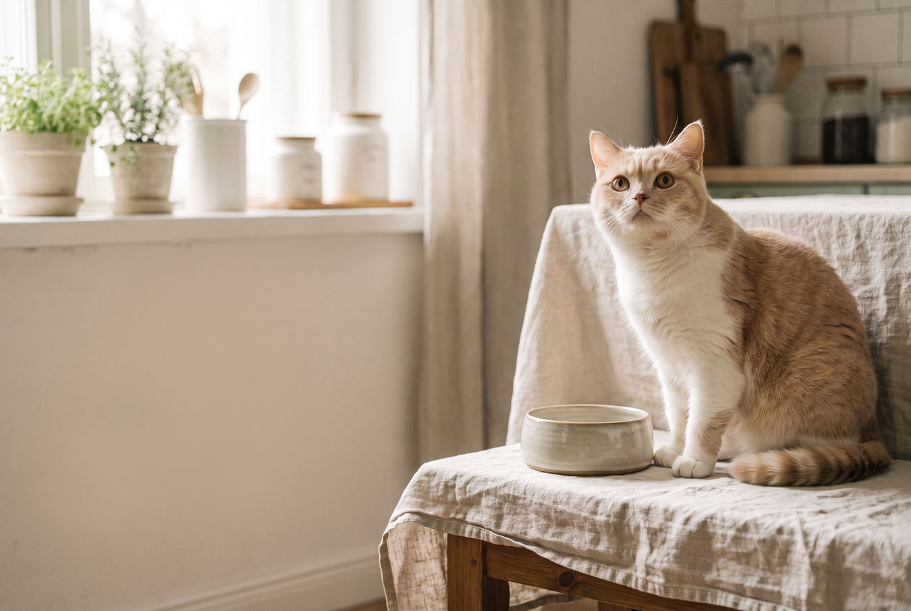

COM CLAUDIA MENDES
Seu gato enjoou do mesmo potinho? Conheça 6 guias gratuitos.
Da alimentação natural às receitas caseiras — incluindo uma ideia com 3 ingredientes — reuni PDFs para quem quer explorar a hora de comer com mais informação e carinho.
Quero receber os 6 PDFsAo tocar, você abre uma conversa no WhatsApp. Os materiais chegam por mensagem, gratuitamente.
para ler no seu ritmo


para variar com cuidadoO QUE VOCÊ VAI RECEBER
Receitas, dúvidas e cuidado reunidos num só lugar.
Em vez de uma única receita solta, a Claudia envia seis materiais em PDF diretamente no WhatsApp. Há ideias de preparo para explorar com calma e leituras sobre situações que muitos tutores reconhecem no dia a dia.
Você pode abrir cada guia no seu tempo. Eles são um ponto de partida para se informar — não uma proposta para trocar, por conta própria, a alimentação completa do animal.
Receber os 6 guias gratuitamenteA COLEÇÃO QUE CHEGA NA CONVERSA
Abra, salve e leia no seu tempo.
Estes são os seis arquivos mostrados no envio automático pelo WhatsApp:
- 01Alimentação Natural Segura Para GatosPDF
- 02Gato Estressado ou Agitado – Como LidarPDF
- 03Gato Não Quer Comer – Como LidarPDF
- 04Gato Enjoa da Comida – Como LidarPDF
- 05Receitas Naturais para GatosPDF
- 0630 Receitas Caseiras Para GatosPDF
Os arquivos são entregues gratuitamente na conversa. Esta página não solicita cadastro nem oferece download direto.
Receber os PDFs no WhatsAppReceita caseira é um agrado.
Nutrição completa é outra conversa.
Gatos têm necessidades nutricionais específicas. Antes de mudar a alimentação principal, especialmente em casos de filhotes, idosos ou animais com alguma condição de saúde, converse com um médico-veterinário. Se o seu gato parou de comer ou apresenta mudanças persistentes de apetite, procure avaliação profissional. Os materiais gratuitos são informativos e não substituem uma dieta completa e balanceada.
Para se informar mais: diretrizes de nutrição da WSAVA e Manual Veterinário Merck.
Seis leituras para começar uma conversa mais cuidadosa sobre o seu gato.
Receba os PDFs pelo WhatsApp, sem formulário e sem pagar por eles.
Receber os 6 guias no WhatsApp